| Copyright | (c) George Ungureanu 2016-2017 |
|---|---|
| License | BSD-style (see the file LICENSE) |
| Maintainer | ugeorge@kth.se |
| Stability | experimental |
| Portability | portable |
| Safe Haskell | Safe |
| Language | Haskell2010 |
ForSyDe.Atom.MoC.DE
Description
The DE library implements a DSL of atoms that operate according to a (safe
instance of) the discrete event model of computation, along with helpers and
patterns associated with this MoC.
This module exports a reduced interpretation of a DE language, where we assume that
each event in a DE signal is persistent, i.e. happened at a discrete instant, and
is buffered until a new event occurs. This enables to exploit the "dataflow" host
of Streams in a conservative and completely deterministic
manner. For an experimental DE language where events are not persistent but
instantaneous, which goes along the classical interpretation of DE
[Cassandras09] please check
ForSyDe.Atom.MoC.DE.React.
Useful pointers:
- ForSyDe.Atom contains general guidelines for using the API
- ForSyDe.Atom.MoC documents details about the internals of the MoC layer, the atoms and the basic structure of all process constructors as MoC patterns.
- ForSyDe.Atom.Utility.Plot contains useful utilities for plotting DE signals.
- ForSyDe.Atom.MoC.DE.React contains a (possibly non-conservative) DE language where events are treated as non-persistent.
- the naming convention rules on how to interpret the function names based on their number of inputs and outputs.
Synopsis
- data DE t a where
- type SignalBase t a = Stream (DE t a)
- type Signal a = SignalBase TimeStamp a
- type TimeStamp = DiffTime
- unit2 :: (Num t, Ord t, Eq t) => ((t, a1), (t, a2)) -> (SignalBase t a1, SignalBase t a2)
- infinite :: (Num t, Ord t, Eq t) => a -> SignalBase t a
- until :: (Num t, Ord t, Eq t) => t -> SignalBase t a -> SignalBase t a
- signal :: (Num t, Ord t, Eq t) => [(t, a)] -> SignalBase t a
- checkSignal :: (Num t, Ord t) => Stream (DE t a) -> Stream (DE t a)
- readSignal :: (Num t, Ord t, Eq t, Read t, Read a) => String -> SignalBase t a
- delay :: (Num t, Ord t, Eq t) => t -> a -> SignalBase t a -> SignalBase t a
- delay' :: (Num t, Ord t, Eq t) => SignalBase t a -> SignalBase t a -> SignalBase t a
- comb22 :: (Num t, Ord t, Eq t) => (a1 -> a2 -> (b1, b2)) -> SignalBase t a1 -> SignalBase t a2 -> (SignalBase t b1, SignalBase t b2)
- reconfig22 :: (Num t, Ord t, Eq t) => SignalBase t (a1 -> a2 -> (b1, b2)) -> SignalBase t a1 -> SignalBase t a2 -> (SignalBase t b1, SignalBase t b2)
- sync2 :: (Num t, Ord t, Eq t) => SignalBase t a1 -> SignalBase t a2 -> (SignalBase t a1, SignalBase t a2)
- constant2 :: (Num t, Ord t, Eq t) => (b1, b2) -> (SignalBase t b1, SignalBase t b2)
- generate2 :: (Num t, Ord t, Eq t) => (b1 -> b2 -> (b1, b2)) -> ((t, b1), (t, b2)) -> (SignalBase t b1, SignalBase t b2)
- stated22 :: (Num t, Ord t, Eq t) => (b1 -> b2 -> a1 -> a2 -> (b1, b2)) -> ((t, b1), (t, b2)) -> SignalBase t a1 -> SignalBase t a2 -> (SignalBase t b1, SignalBase t b2)
- state22 :: (Num t, Ord t, Eq t) => (b1 -> b2 -> a1 -> a2 -> (b1, b2)) -> ((t, b1), (t, b2)) -> SignalBase t a1 -> SignalBase t a2 -> (SignalBase t b1, SignalBase t b2)
- moore22 :: (Num t, Ord t, Eq t) => (st -> a1 -> a2 -> st) -> (st -> (b1, b2)) -> (t, st) -> SignalBase t a1 -> SignalBase t a2 -> (SignalBase t b1, SignalBase t b2)
- mealy22 :: (Num t, Ord t, Eq t) => (st -> a1 -> a2 -> st) -> (st -> a1 -> a2 -> (b1, b2)) -> (t, st) -> SignalBase t a1 -> SignalBase t a2 -> (SignalBase t b1, SignalBase t b2)
- embedSY22 :: (Signal a1 -> Signal a2 -> (Signal b1, Signal b2)) -> Signal a1 -> Signal a2 -> (Signal b1, Signal b2)
- toSY2 :: (Num t, Ord t, Eq t) => SignalBase t a -> SignalBase t b -> (Signal t, Signal a, Signal b)
- toCT2 :: (Num ts, Real ts, Ord ts, Eq ts, Num tm, Fractional tm, Ord tm) => SignalBase ts (tm -> a) -> SignalBase ts (tm -> b) -> (SignalBase ts tm a, SignalBase ts tm b)
- zipx :: (Num t, Ord t, Eq t) => Vector (SignalBase t a) -> SignalBase t (Vector a)
- unzipx :: (Num t, Ord t, Eq t) => Integer -> SignalBase t (Vector a) -> Vector (SignalBase t a)
- unzipx' :: (Num t, Ord t, Eq t) => SignalBase t (Vector a) -> Vector (SignalBase t a)
Discrete event (DE)
According to the tagged signal model [Lee98], "a discrete-event system is a timed system \(Q\) where for all \(s\in Q\), the tag sytem is order-isomorphic to a subset of the integers. Order-isomorphic means that there exists an order-preserving bijection between the events in and a subset of the integers (or the entire set of integers)."
The discrete event (DE) MoC describes a notion of physical time through its
tags, also called timestamps. An important property of the DE tag system is that
between any two timestamps \(t_u\) and \(t_v\) there is a finite number of
possible timestamps. Based on these observations we can formulate the folowing
simplified definition:
- The DE MoC
- is abstracting the execution semantics of a system where synchronization is discrete (i.e. happens at discrete instants in time) and time-dependent (i.e. is based on an implicit algebra of tags).
There are many variants of discrete event simulators in literature. The execution model covered by the DE implementation in the ForSyDe.Atom.MoC.DE module may be described as a "strictly causal cycle simulator" with no delta-delay nor superdense time. The signals behave as "persistent channels" (similar to an HDL simulator), and processes react instantaneously to any new event. The simplicity of the execution model is ideal for modeling safe DE systems, its monotonic dataflow internals making it somewhat comparable to the conservative discrete event simulators (see [Fujimoto00]). Below you can see an example of a simple DE process, without any behavior extensions:
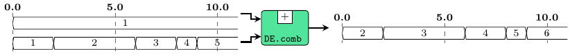
A variant of the DE MoC where events are instantaneous and non-triggering behavior is implemented in ForSyDe.Atom.MoC.DE.React. Below are stated a few particularities of this DE MoC implementation:
- in the terms of [Lee98], our DE MoC is a one-sided
system, i.e. time starts from an absolute \(0\). While negative time cannot be
represented, signals can be "phase-aligned" with the help of the
-&-atom. All signals need to start from timestamp \(0\), and events need to be positioned with their tags in strict ascending order. ThecheckSignalutility enforces these rules. This restriction is lifted in ForSyDe.Atom.MoC.DE.React. - tags are explicit and a
DEevent will construct a type around both a tag and a value. Tags represent the start time of the event, the end time being implicit from the start time of the next event. By doing so, we ensure that the time domain is non-disjoint and continuous. This implies that, at any instant in time aDEsystem describes one specific state. - events are assumed to persist from their time of arrival until the next event arrives or, if there is no incoming event, until infinity. Hence, signals can be interpreted as either persistent channels (e.g. latched wires), or non-blocking buffers of size 1.
- a safe
delayconsists in a prepend-<-(i.e. generating the new value) and a phase shift-&-(i.e. advancing time with a positive integer). This is done in order to both preserve causality and avoid deadlock. - as a consequence a pure
DEfeedback loop will generate an infinite number of events (strictly preceding each other), since it updates the value after a certain delay, and any input is assumed to go to infinity. Hence all the stateful processes that involve a feedback loop, e.g.state22,moore22,mealy22are, by design choice, exposing this type of oscillating behavior. For sateful processes that react "instantaneously", one should consider defining a hybrid SY/DE process, seeembedSY22. - due to the reactive dataflow natures of the host
Streams, DE processes should not to clean up events. Doing so might lead to deadlock wherever any feedback is involved. This means that a new event is created every time a new event arrives, regardless of what value it carries. This means that all values are propagated, justifying our system's conservative approach [Fujimoto00].DEatoms do not clean signals, however this restriction is lifted in ForSyDe.Atom.MoC.DE.React. - due to the pure and conservative approach, ForSyDe DE simulations, although not very efficient (i.e. suffer from the same drawback as the fist generation of conservative approaches, namey "lookahead creep", see unpublished yet), are completely parallelizable. This is because processes are self-sufficient and do not depend on a global event queue (as compared to other cycle simulators).
- any signal from outside needs to be sane ( \(T\) must be a total order) before being injected into a ForSyDe process network. Helper functions are equipped with sanity checkers. Inside a ForSyDe process network, transformations are monotonic, thus output signals are guaranteed to be sane.
- since \(T\) is a total order, there is no need for an execution context and we can ignore the formatting of functions in ForSyDe.Atom.MoC, thus \[ \Gamma\vdash\alpha\rightarrow\beta = \alpha\rightarrow\beta \]
The DE event. It identifies a discrete event signal. The type of the tag system needs to satisfy all of the three properties, as suggested by the type constraints imposed on it:
- it needs to be a numerical type, to express value 0 (global start) and every representable number needs to have an additive inverse.
- it needs to be unambiguously comparable (defines a total order).
- it needs to unambiguously define an equality operation.
Due to these properties not all numerical types can represent DE tags. A typical
example of inappropriate representation is Float.
Instances
| (Num t, Ord t, Eq t) => Functor (DE t) Source # | Allows for mapping of functions on a DE event. |
| (Num t, Ord t, Eq t) => Applicative (DE t) Source # | Allows for lifting functions on a pair of DE events. |
| (Num t, Ord t, Eq t) => MoC (DE t) Source # | Implenents the execution semantics for the DE MoC atoms. |
Defined in ForSyDe.Atom.MoC.DE.Core Methods (-.-) :: Fun (DE t) a b -> Stream (DE t a) -> Stream (DE t b) Source # (-*-) :: Stream (DE t (Fun (DE t) a b)) -> Stream (DE t a) -> Stream (DE t b) Source # (-*) :: Stream (DE t (Ret (DE t) b)) -> Stream (DE t b) Source # (-<-) :: Stream (DE t a) -> Stream (DE t a) -> Stream (DE t a) Source # (-&-) :: Stream (DE t a) -> Stream (DE t a) -> Stream (DE t a) Source # | |
| (Num t, Ord t, Eq t, Eq t, Eq a) => Eq (DE t a) Source # | |
| (Read a, Read t, Num t, Ord t, Eq t, Eq t) => Read (DE t a) Source # | Reads the string of type |
| (Show a, Show t) => Show (DE t a) Source # | Shows the event with tag |
| (Plottable a, Show t, Real t, Fractional t, Num t, Ord t, Eq t) => Plot (SignalBase t a) Source # | For plotting |
Defined in ForSyDe.Atom.Utility.Plot Methods sample :: Float -> SignalBase t a -> Samples Source # sample' :: SignalBase t a -> Samples Source # takeUntil :: Float -> SignalBase t a -> SignalBase t a Source # getInfo :: SignalBase t a -> PInfo Source # | |
| type Ret (DE t) b Source # | |
Defined in ForSyDe.Atom.MoC.DE.Core | |
| type Fun (DE t) a b Source # | |
Defined in ForSyDe.Atom.MoC.DE.Core | |
Aliases & utilities
These are type synonyms and utilities provided for user convenience. They mainly concern the construction and usage of signals.
type SignalBase t a = Stream (DE t a) Source #
Type synonym for a base DE signal as a stream of DE events, where the type of
tags has not been determined yet. In designs, it is advised to define a type alias
for signals, using an appropriate numerical type for tags, e.g.
import ForSyDe.Atom.MoC.DE hiding (Signal) -- hide provided alias, to use your own type Signal a = SignalBase Int a
type Signal a = SignalBase TimeStamp a Source #
Convenience alias for a DE signal, where tags are represented using our exported
TimeStamp type.
type TimeStamp = DiffTime Source #
Alias for the type representing discrete time. It is inherently quantizable, the quantum being a picosecond ( \(10^{-12}\) seconds), thus it can be considered order-isomorphic with a set of integers, i.e. between any two timestamps there is a finite number of timestamps. Moreover, a timestamp can be easily translated into a rational number representing fractions of a second, so the conversion between timestamps (discrete time) and rationals (analog/continuous time) is straightforward.
This type is used in the explicit tags of the
DE MoC (and subsequently the discrete event
evaluation engine for simulating the CT MoC).
unit2 :: (Num t, Ord t, Eq t) => ((t, a1), (t, a2)) -> (SignalBase t a1, SignalBase t a2) Source #
Wraps a (tuple of) pair(s) (tag, value) into the equivalent
unit signal(s). A unit signal is a signal with one event with the
period tag carrying value.
Helpers: unit|unit[2-4].
until :: (Num t, Ord t, Eq t) => t -> SignalBase t a -> SignalBase t a Source #
Takes the first part of the signal util a given timestamp. The last event of the resulting signal is at the given timestamp and carries the previous value. This utility is useful when plotting a signal, to specify the interval of plotting.
signal :: (Num t, Ord t, Eq t) => [(t, a)] -> SignalBase t a Source #
Transforms a list of tuples (tag, value) into a DE
signal. Checks if it is well-formed.
checkSignal :: (Num t, Ord t) => Stream (DE t a) -> Stream (DE t a) Source #
Checks if a signal is well-formed or not, according to the DE MoC interpretation in ForSyDe-Atom.
readSignal :: (Num t, Ord t, Eq t, Read t, Read a) => String -> SignalBase t a Source #
Reads a signal from a string and checks if it is well-formed.
Like with the read function from Prelude, you must specify the
type of the signal.
>>>readSignal "{ 1@0, 2@2, 3@5, 4@7, 5@10 }" :: Signal Int{1@0s,2@2s,3@5s,4@7s,5@10s}
Incorrect usage (not covered by doctest):
λ> readSignal "{ 1@0, 2@2, 3@5, 4@10, 5@7 }" :: Signal Int
{1@0s,2@2s,3@5s*** Exception: [MoC.DE] malformed signal
λ> readSignal "{ 1@1, 2@2, 3@5, 4@7, 5@10 }" :: Signal Int
*** Exception: [MoC.DE] signal does not start from global 0DE process constuctors
These are specific implementations of the atom patterns defined in ForSyDe.Atom.MoC.
Simple
These are mainly direct instantiations of patterns defined in ForSyDe.Atom.MoC, using DE-specific utilities.
Arguments
| :: (Num t, Ord t, Eq t) | |
| => t | time delay |
| -> a | initial value |
| -> SignalBase t a | input signal |
| -> SignalBase t a | output signal |
The delay process "delays" a signal with one
event. Instantiates the delay pattern defined in
ForSyDe.Atom.MoC.
>>>let s = readSignal "{1@0, 2@2, 3@6, 4@8, 5@9}" :: Signal Int>>>delay 3 0 s{0@0s,1@3s,2@5s,3@9s,4@11s,5@12s}
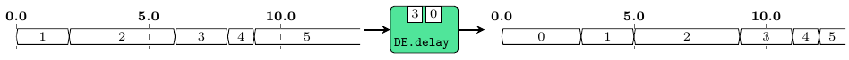
Arguments
| :: (Num t, Ord t, Eq t) | |
| => SignalBase t a | signal "borrowing" the initial event |
| -> SignalBase t a | input signal |
| -> SignalBase t a | output signal |
Similar to the previous, but this is the raw instantiation of the
delay pattern from ForSyDe.Atom.MoC. It
"borrows" the first event from one signal and appends it at the
head of another signal.
>>>let s1 = readSignal "{1@0, 2@2, 3@6, 4@8, 5@9}" :: Signal Int>>>let s2 = readSignal "{3@0, 4@4, 5@5, 6@8, 7@9}" :: Signal Int>>>delay' s1 s2{1@0s,3@2s,4@6s,5@7s,6@10s,7@11s}
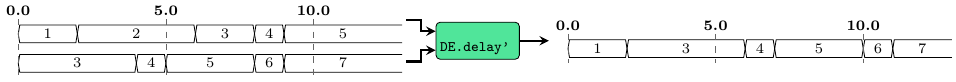
Arguments
| :: (Num t, Ord t, Eq t) | |
| => (a1 -> a2 -> (b1, b2)) | function on values |
| -> SignalBase t a1 | first input signal |
| -> SignalBase t a2 | second input signal |
| -> (SignalBase t b1, SignalBase t b2) | two output signals |
comb processes map combinatorial functions on signals and take
care of synchronization between input signals. It instantiates the
comb pattern (see comb22 defined in
ForSyDe.Atom.MoC).
Constructors: comb[1-4][1-4].
>>>let s1 = infinite 1>>>let s2 = readSignal "{1@0, 2@2, 3@6, 4@8, 5@9}" :: Signal Int>>>comb11 (+1) s2{2@0s,3@2s,4@6s,5@8s,6@9s}>>>comb22 (\a b-> (a+b,a-b)) s1 s2({2@0s,3@2s,4@6s,5@8s,6@9s},{0@0s,-1@2s,-2@6s,-3@8s,-4@9s})
Arguments
| :: (Num t, Ord t, Eq t) | |
| => SignalBase t (a1 -> a2 -> (b1, b2)) | signal carrying functions |
| -> SignalBase t a1 | first input signal carrying arguments |
| -> SignalBase t a2 | second input signal carrying arguments |
| -> (SignalBase t b1, SignalBase t b2) | two output signals |
reconfig creates a DE adaptive process where the first signal
carries functions and the other carry the arguments. It
instantiates the reconfig atom pattern (see
reconfig22 defined in ForSyDe.Atom.MoC).
Constructors: reconfig[1-4][1-4].
>>>let sf = signal [(0,(+1)),(2,(*2)),(5,(+1)),(7,(*2))]>>>let s1 = signal [(0,1),(3,2),(5,3),(9,4)]>>>reconfig11 sf s1{2@0,2@2,4@3,4@5,6@7,8@9}
Arguments
| :: (Num t, Ord t, Eq t) | |
| => SignalBase t a1 | first input signal |
| -> SignalBase t a2 | second input signal |
| -> (SignalBase t a1, SignalBase t a2) | two output signals |
sync synchronizes multiple signals, so that they have the same
set of tags, and consequently, the same number of events. It
instantiates the comb atom pattern (see comb22
defined in ForSyDe.Atom.MoC).
Constructors: sync[1-4]
>>>let s1 = readSignal "{1@0, 2@2, 3@6, 4@8, 5@9}" :: Signal Int>>>let s2 = readSignal "{1@0, 2@5, 3@6, 4@10, 5@12}" :: Signal Int>>>sync2 s1 s2({1@0s,2@2s,2@5s,3@6s,4@8s,5@9s,5@10s,5@12s},{1@0s,1@2s,2@5s,3@6s,3@8s,3@9s,4@10s,5@12s})
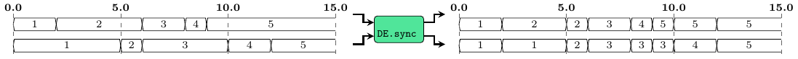
Arguments
| :: (Num t, Ord t, Eq t) | |
| => (b1, b2) | values to be repeated |
| -> (SignalBase t b1, SignalBase t b2) | generated signals |
A signal generator which keeps a value constant. As compared with
the SY, it just constructs an infinite signal
with constant value (i.e. a signal with one event starting from
time 0).
Constructors: constant[1-4].
>>>constant1 2{2@0}

Arguments
| :: (Num t, Ord t, Eq t) | |
| => (b1 -> b2 -> (b1, b2)) | function to generate next value |
| -> ((t, b1), (t, b2)) | kernel values tupled with their generation rate. |
| -> (SignalBase t b1, SignalBase t b2) | generated signals |
A signal generator based on a function and a kernel value. It is
actually an instantiation of the stated0X constructor (check
stated22 defined in ForSyDe.Atom.MoC).
Constructors: generate[1-4].
>>>let (s1,s2) = generate2 (\a b -> (a+1,b+2)) ((3,1),(1,2))>>>takeS 5 s1{1@0,2@3,2@4,2@5,3@6}>>>takeS 7 s2{2@0,4@1,6@2,8@3,10@4,12@5,14@6}
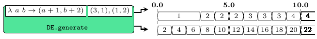
Arguments
| :: (Num t, Ord t, Eq t) | |
| => (b1 -> b2 -> a1 -> a2 -> (b1, b2)) | next state function |
| -> ((t, b1), (t, b2)) | initial state values tupled with their initial delay |
| -> SignalBase t a1 | first input signal |
| -> SignalBase t a2 | second input signal |
| -> (SignalBase t b1, SignalBase t b2) | output signals |
stated is a state machine without an output decoder. It is an
instantiation of the state MoC constructor (see
stated22 defined in ForSyDe.Atom.MoC).
Constructors: stated[1-4][1-4].
>>>let s = readSignal "{1@0, 2@2, 3@6, 4@8, 5@9}" :: Signal Int>>>takeS 7 $ stated11 (+) (6,1) s{1@0s,2@6s,3@8s,5@12s,7@14s,8@15s,10@18s}
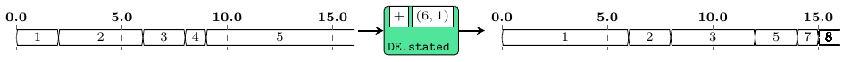
Arguments
| :: (Num t, Ord t, Eq t) | |
| => (b1 -> b2 -> a1 -> a2 -> (b1, b2)) | next state function |
| -> ((t, b1), (t, b2)) | initial state values tupled with their initial delay |
| -> SignalBase t a1 | first input signal |
| -> SignalBase t a2 | second input signal |
| -> (SignalBase t b1, SignalBase t b2) | output signals |
state is a state machine without an output decoder, and the
state non-transparent. It is an instantiation of the state MoC
constructor (see state22 defined in
ForSyDe.Atom.MoC).
Constructors: state[1-4][1-4].
>>>let s = readSignal "{1@0, 2@2, 3@6, 4@8, 5@9}" :: Signal Int>>>takeS 7 $ state11 (+) (6,1) s{2@0s,3@2s,5@6s,7@8s,8@9s,10@12s,12@14s}
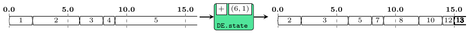
Arguments
| :: (Num t, Ord t, Eq t) | |
| => (st -> a1 -> a2 -> st) | next state function |
| -> (st -> (b1, b2)) | output decoder |
| -> (t, st) | initial state: tag and value |
| -> SignalBase t a1 | |
| -> SignalBase t a2 | |
| -> (SignalBase t b1, SignalBase t b2) |
moore processes model Moore state machines. It is an
instantiation of the moore MoC constructor (see
moore22 defined in ForSyDe.Atom.MoC).
Constructors: moore[1-4][1-4]
>>>let s = readSignal "{1@0, 2@2, 3@6, 4@8, 5@9}" :: Signal Int>>>takeS 7 $ moore11 (+) (+1) (6,1) s{2@0s,3@6s,4@8s,6@12s,8@14s,9@15s,11@18s}
Arguments
| :: (Num t, Ord t, Eq t) | |
| => (st -> a1 -> a2 -> st) | next state function |
| -> (st -> a1 -> a2 -> (b1, b2)) | outpt decoder |
| -> (t, st) | initial state: tag and value |
| -> SignalBase t a1 | |
| -> SignalBase t a2 | |
| -> (SignalBase t b1, SignalBase t b2) |
mealy processes model Mealy state machines. It is an
instantiation of the mealy MoC constructor (see
mealy22 defined in ForSyDe.Atom.MoC).
Constructors: mealy[1-4][1-4]
>>>let s = readSignal "{1@0, 2@2, 3@6, 4@8, 5@9}" :: Signal Int>>>takeS 7 $ mealy11 (+) (-) (6,1) s{0@0s,-1@2s,-1@6s,-1@8s,-2@9s,0@12s,2@14s}
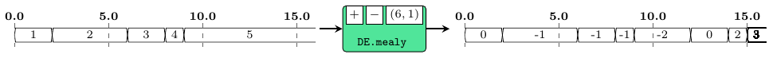
Hybrid
Processes that can wrap other MoCs inside a DE execution model.
Arguments
| :: (Signal a1 -> Signal a2 -> (Signal b1, Signal b2)) |
|
| -> Signal a1 | first input DE signal |
| -> Signal a2 | second input DE signal |
| -> (Signal b1, Signal b2) | two output |
Embeds a SY process inside a
DE environment. Internally, it synchronizes
the input signals, translates them to SY, feeds them to a SY
process and translates the result back to DE using the same input
tags. Seen from outside, this process behaves like a DE process
with "instantaneous response", even for feedback loops.
Constructors: embedSY[1-4][1-4].
For the following example, see the difference between its output
and the one of stated22
>>>let s = readSignal "{1@0, 2@2, 3@6, 4@8, 5@9}" :: DE.Signal Int>>>embedSY11 (SY.stated11 (+) 1) s{1@0s,2@2s,4@6s,7@8s,11@9s}
Interfaces
Arguments
| :: (Num t, Ord t, Eq t) | |
| => SignalBase t a | first input DE signal |
| -> SignalBase t b | second input DE signal |
| -> (Signal t, Signal a, Signal b) | signal carrying timestamps tupled with the two output
|
Synchronizes a (set of) DE signal(s) an
strips off their explicit tags, outputting the equivalent
SY signal(s), tupled with an SY signal
carrying the timestamps for the synchronization points.
Constructors: toSY[1-4]
>>>let s1 = DE.infinite 1>>>let s2 = DE.readSignal "{1@0, 2@2, 3@6, 4@8, 5@9}" :: DE.Signal Int>>>toSY2 s1 s2({0s,2s,6s,8s,9s},{1,1,1,1,1},{1,2,3,4,5})
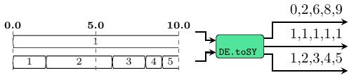
Arguments
| :: (Num ts, Real ts, Ord ts, Eq ts, Num tm, Fractional tm, Ord tm) | |
| => SignalBase ts (tm -> a) | first input DE signal |
| -> SignalBase ts (tm -> b) | second input DE signal |
| -> (SignalBase ts tm a, SignalBase ts tm b) | two output |
zipx :: (Num t, Ord t, Eq t) => Vector (SignalBase t a) -> SignalBase t (Vector a) Source #
Synchronizes all the signals contained by a vector and zips them
into one signal of vectors. It instantiates the
zipx skeleton.
>>>let s1 = DE.readSignal "{1@0, 2@2, 3@6, 4@8, 5@9}" :: DE.Signal Int>>>let s2 = DE.readSignal "{1@0, 2@2, 3@4, 4@8, 5@9}" :: DE.Signal Int>>>let v1 = V.vector [s1,s1,s2,s2]>>>v1<{1@0s,2@2s,3@6s,4@8s,5@9s},{1@0s,2@2s,3@6s,4@8s,5@9s},{1@0s,2@2s,3@4s,4@8s,5@9s},{1@0s,2@2s,3@4s,4@8s,5@9s}>>>>zipx v1{<1,1,1,1>@0s,<2,2,2,2>@2s,<2,2,3,3>@4s,<3,3,3,3>@6s,<4,4,4,4>@8s,<5,5,5,5>@9s}
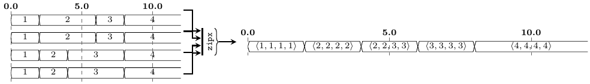
unzipx :: (Num t, Ord t, Eq t) => Integer -> SignalBase t (Vector a) -> Vector (SignalBase t a) Source #
Unzips the vectors carried by a signal into a vector of
signals. It instantiates the unzipx
skeleton. To avoid infinite recurrence, the user needs to provide
the length of the output vector.
>>>let v1 = V.vector [1,2,3,4]>>>let s1 = DE.signal [(0,v1),(2,v1),(6,v1),(8,v1),(9,v1)] :: DE.Signal (V.Vector Int)>>>s1{<1,2,3,4>@0s,<1,2,3,4>@2s,<1,2,3,4>@6s,<1,2,3,4>@8s,<1,2,3,4>@9s}>>>unzipx 4 s1<{1@0s,1@2s,1@6s,1@8s,1@9s},{2@0s,2@2s,2@6s,2@8s,2@9s},{3@0s,3@2s,3@6s,3@8s,3@9s},{4@0s,4@2s,4@6s,4@8s,4@9s}>
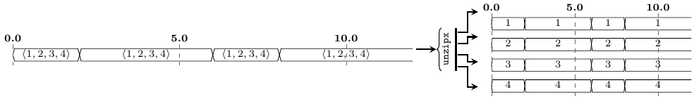
unzipx' :: (Num t, Ord t, Eq t) => SignalBase t (Vector a) -> Vector (SignalBase t a) Source #
Same as unzipx, but "sniffs" the first event to determine the length of the output vector. Might have unsafe behavior!
>>>let v1 = V.vector [1,2,3,4]>>>let s1 = DE.signal [(0,v1),(2,v1),(6,v1),(8,v1),(9,v1)] :: DE.Signal (V.Vector Int)>>>s1{<1,2,3,4>@0s,<1,2,3,4>@2s,<1,2,3,4>@6s,<1,2,3,4>@8s,<1,2,3,4>@9s}>>>unzipx' s1<{1@0s,1@2s,1@6s,1@8s,1@9s},{2@0s,2@2s,2@6s,2@8s,2@9s},{3@0s,3@2s,3@6s,3@8s,3@9s},{4@0s,4@2s,4@6s,4@8s,4@9s}>